About
Menu
Events
About
Menu
Events Calendar Photo
Lab



There is a whole world beneath the surface of civilization which exists so that the rest of the world--so-called “daywalkers” working a typical 9 am to 5 pm job--have access to bars, restaurants, hotels, and clubs to visit, eat and drink, unwind and let off steam. It hosts special occasions and offers places to make new connections and foster those already forged.
That underground world supporting society is made up of a network of passionate and hardworking hospitality professionals, in the job for a variety of motives, but all sacrificing their nights, weekends, and holidays so everyone else can let loose.
The healthier and more vibrant that network is, the more the culture of the society it supports thrives, and the more it grows into a self-sustaining ecosystem built on camraderie, mentorship, mutual favours, collaborations, and a shared love of making cool shit happen.
Lost Souls Club is a bartender-founded hospitality community intended to strenthen the hospitality community in Malta. It's also the name of the flagship event every week on Sundays at Cafe Society Valletta, which is fully staff-run and operated, and the profits from which are split between the staff who volunteered for it.
If you work in hospitality or in the nightlife/entertainment industry, ask at the bar for a Lost Souls Club sticker to put on your phone case or bank card. Flash it when you order at any Sunday night Lost Souls Club event to get a 20% hospo discount!
Our aim is to grow Lost Souls Club to be more than just the Sunday night hospo party, but also a community resource, bringing together those in the hospitality or nightlife industries in Malta, both expat and local.
Follow @lostsoulsclub_malta for info on the weekly events and for announcements of other events or activations.
LOST SOULS CLUB INSTA